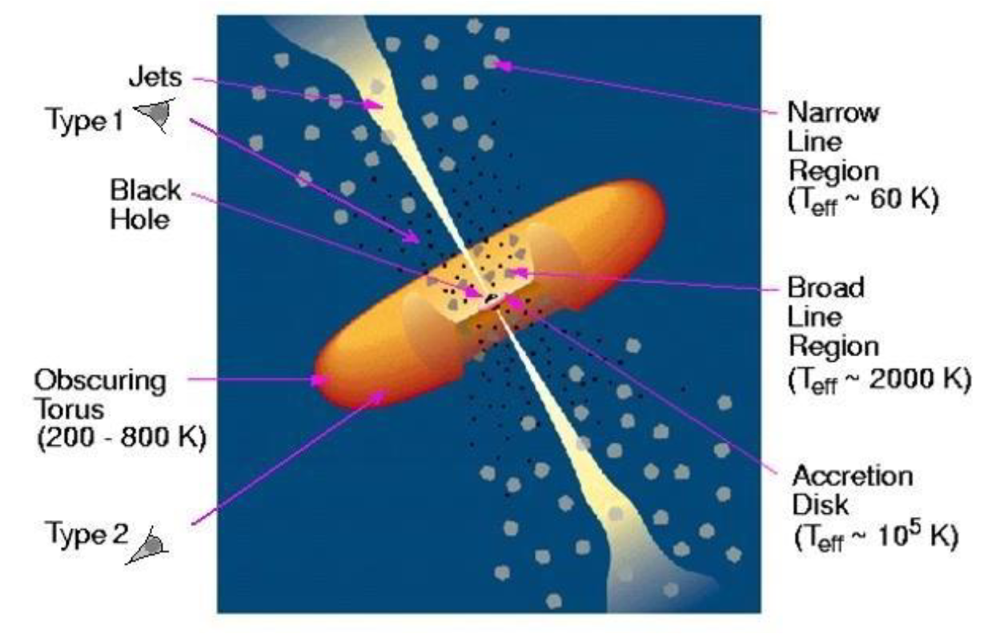
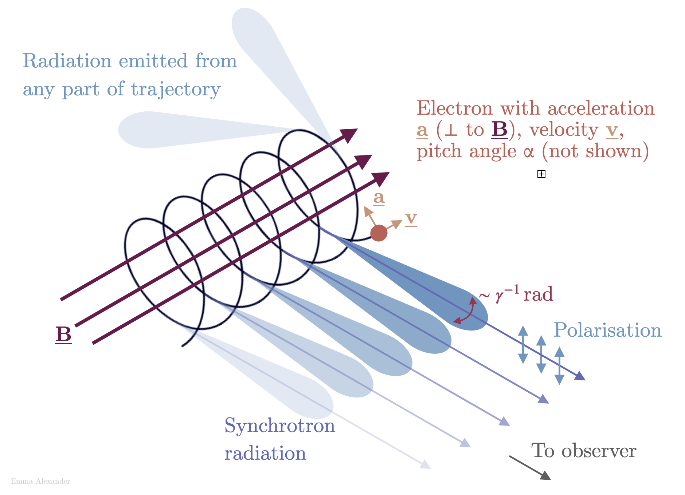
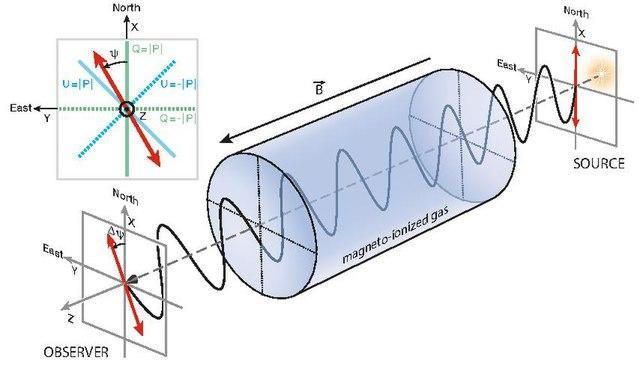
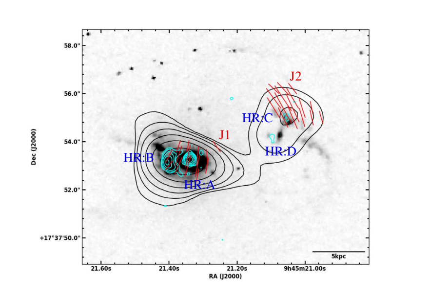
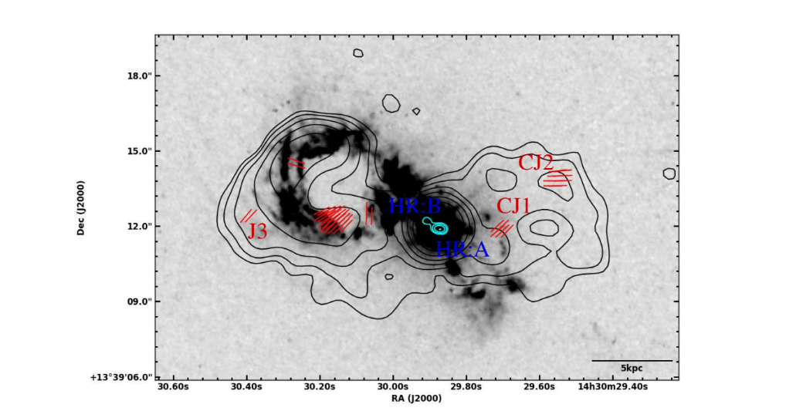

Looking at five radio-quiet AGN through the polarization lens
This article discusses the results from our combined radio polarization and emission line study of five type-2 radio-quiet quasars. We investigate the origin of radio emission in these sources and understand what impact the local gaseous environments have on the nature of radio outflows in them. Our work further sheds light on the potential of using radio polarization as an efficient tool to look for signatures of AGN feedback in the relatively understudied class of radio-quiet AGN.
Introduction
AGN are amongst the most energetic and extraordinarily radiant phenomena in the Universe. They are powered by supermassive black holes (SMBHs; with masses ranging between 106 − 1010 solar masses (M⊙)) that are actively accreting matter through an accretion disk and releasing tremendous amounts of energy in the form of radiation and outflows. While AGN exhibits a variety of classes, such as quasars, Seyfert galaxies, radio galaxies, blazars, etc., they all share some fundamental constituents, which include (see Figure 1): a SMBH at the center, an accretion disk, an X-ray emitting corona presumably located above the accretion disk, fast moving, dense gas clouds giving rise to the broad optical emission lines (broad line region or BLR), slow moving, relatively less dense gas clouds giving rise to the narrow optical emission lines, (narrow line region or NLR) and a doughnut-shaped torus of gas and dust (Peterson, 1997; Urry & Padovani, 1995).

Figure 1: The standard model of AGN by Urry & Padovani, 1995. Figure taken from Khassen (2010).
AGN are classified as type-1 and -2 based on their optical spectra: type-1 AGN exhibit both broad and narrow emission lines while type-2 AGN exhibit only narrow emission lines. These differences have been suggested to arise as a result of the different viewing angles of the central engine (see Figure 1). The torus is believed to surround the central engine and obscure the BLR clouds from certain lines of sight (Antonucci, 1993; Urry & Padovani, 1995). The sources viewed edge-on (i.e, when the observer’s line of sight intersects the torus) are recognized as type-2 AGN while the sources viewed face-on are recognized as type-1 AGN. Quasars, which are known to be an extremely luminous and highly accreting class of AGN, have been traditionally associated with type-1 class. However, recent studies have identified a few type-2 quasars as well based on their optical spectra (for e.g., Reyes et al., 2008; Mullaney et al., 2013).
In addition, powerful and collimated structures of relativistic plasma, known as jets, are launched perpendicular to the black hole-accretion disk interface. In 10-20% of the AGN population, these jets extend over scales ranging from a few hundred kiloparsecs (kpc) to several megaparsecs (Mpc); this class is called radio-loud (RL) AGN. On the other hand, a vast majority of the AGN population (80−90%) launch weak and small-scale radio jets of typically less than 10 kpc in extent. They may, alternatively, host poorly collimated wind-like or bubble-like, diffuse radio outflows. These constitute the radio-quiet (RQ) class of AGN.

Figure 2. Diagram of synchrotron emission (https://emmaalexander.github.io/resources.html) by Emma Alexander/ CC BY 4.0
AGN jets emit synchrotron radiation at radio frequencies. Synchrotron radiation is produced by relativistic charged particles spiraling around magnetic field lines, and is concentrated within a narrow cone pointing in the direction of the particle motion (see Figure 2). Synchrotron radiation is intrinsically linearly polarized in the plane perpendicular to the magnetic fields. Radio polarization observations can, therefore, provide information about the orderliness and orientation of the magnetic fields giving rise to the synchrotron emission. According to the synchrotron theory, the magnetic fields are inferred to be parallel to the electric polarization vectors for optically thick regions like the core, and perpendicular for optically thin regions like jets, lobes and hotspots. For ordered magnetic fields and optically thin regions, the maximum theoretical fractional polarization of synchrotron emission is expected to be 75%. However, in reality, since the magnetic fields also consist of a random component, the fractional polarization is observed to be typically lower than this intrinsic value.
In addition, as the electromagnetic radiation passes through the region between the source and the observer, it interacts with the intervening magneto-ionic medium that consists of free charges and magnetic fields, resulting in the rotation of the plane of polarization of the electromagnetic wave. This effect is known as Faraday rotation (see Figure 3), which when coupled with other factors such as observing bandwidth and telescope beam could cause a further drop in the fractional polarization. The mechanisms causing depolarization (i.e., drop in the fractional polarization) of the radio emission can be broadly categorized as external and internal. The former (latter) refers to the case where the Faraday rotating medium is extrinsic (intrinsic) to the synchrotron emitting plasma (Burn 1966; Sokoloff et al. 1998).

Figure 3: Faraday rotation of a polarized electromagnetic wave as it propagates through the magneto-ionic medium. Figure taken from Ferri`ere et al. (2021).
‘AGN feedback’ is a process by which AGN impact and regulate the growth and evolution of their host galaxies (see Fabian, 2012; King & Pounds, 2015 for details). AGN feedback is believed to shape the black hole-bulge mass relation, which is the correlation between the black hole mass and the luminosity (and mass) of the bulge component of the host galaxies. AGN feedback can have both positive and negative impacts on galaxy evolution. AGN feedback could either suppress star formation and thereby prevent inordinate growth of massive galaxies (called ‘negative feedback’) or could enhance star formation locally (called ‘positive feedback’). Traditionally, AGN feedback is known to come in two modes: (i) quasar-mode, which is typically associated with quasars that drive high-velocity winds capable of removing the star-forming fuel from host galaxies, and ultimately resulting in the shut-down of star-formation, and (ii) jet-mode, which is associated with low accretion rate AGN that launch large-scale jets capable of transferring the power mechanically and regulating star-formation. In order to develop a comprehensive picture of galaxy formation and evolution in the Universe, an in-depth understanding of AGN feedback is indispensable.
Motivation
AGN feedback has become an important constituent in the cosmological simulations of galaxy formation and evolution. However, finding observational signatures of this phenomenon is a challenging task and an active area of ongoing research. One way AGN can influence the gas in the host galaxies is through galactic-scale outflows that can transport matter and energy from the central engine to the host environments. It is widely believed that these outflows are driven by large-scale, powerful jets in RL AGN. However, whether these outflows are prevalent in RQ AGN, and if so, what drives them is still an unsettled question. Over these years, a lot of progress has been made in understanding how AGN feedback operates in RL AGN, but not so much in case of RQ AGN, with only a handful of them having been looked at so far. Yet, what is exciting even from these minimal studies is that despite lacking large-scale, powerful radio outflows, RQ AGN could be efficient agents of AGN feedback.
The limited AGN feedback studies in RQ AGN is a major setback in our attempts towards understanding how the Universe is working, since the majority of the AGN in the Universe are RQ. Probing AGN feedback in RQ AGN has been difficult because the radio emission in these sources can arise from a wide range of mechanisms like star formation, low-powered small-scaled jets, AGN/starburst winds, coronal emission, or even a combination of them with each of them being able to impact the interstellar medium (ISM) differently (see Panessa et al. 2019, for details). Therefore, AGN feedback in RQ AGN becomes a two-fold problem: first probing the relative radio contributions from different emitters, and then determining their relative roles in driving galaxy-wide outflows.
In this paper, we have presented results from our 5 GHz B-array (resolution∼1 arcsec) Karl Jansky Very large Array (VLA) polarimetric observations in conjunction with the archival [O iii] images from the Hubble Space Telescope (HST) of five type-2 RQ quasars selected from the Quasar Feedback Survey sample (QFeedS; find out more about this survey at the project website; Jarvis et al. 2021). This paper aims to establish the origin of radio emission (jet or wind) in these sources and the impact of the local gaseous environments on the nature of the radio outflows in them. This paper also explores the potential of using radio polarization as a tool to look for signatures of AGN feedback in these sources.
The 5 sources that constitute our sample are: J0945+1737, J1000+1242, J1010+1413, J1356+1026, J1430+1339. These sources, from their previous studies of spatially resolved radio and [O iii] observations, are known to exhibit powerful and galactic-scale [O iii] outflows, prominent kpc-scale radio structures that are likely to be dominated by jet emission and a close association between radio emission and [O iii] emission. These sources, therefore, can serve as potential candidates to study the interplay of jets, winds and emission-line gas in the poorly studied class of RQ AGN. We used the Astronomical Image Processing System (AIPS ) and Common Astronomy Software Applications (CASA ) software to reduce and analyze the VLA data of our sources (see for details of the analysis Silpa et al. 2022 ).
Results and Discussion
We detect polarization in 4 sources, viz. J0945+1737, J1000+1242, J1356+1026 and J1430+1339. This is a good detection fraction given that the sample is RQ. J1010+1413 is the only unpolarized source in our sample. The lack of polarization in this source could either be due to limited sensitivity of our observations or due to strong depolarization effects. In Figures 4 and 5, we present the VLA images of J0945+1737 and J1430+1339 (popularly known as “Teacup” quasar) respectively, at 5 GHz in the B-array configuration. The black contours represent VLA 5 GHz B-array total intensity image (with ~1 arcsec resolution), the red ticks represent the polarization electric vectors (whose lengths are proportional to the linear polarized intensity), the gray-scale background represents HST [O iii] image and the cyan contours represent higher resolution (~0.25 arcsec) VLA 6 GHz A-array total intensity image (taken from Jarvis et al. 2019 ). Please refer to the original paper (Silpa et al. 2022 ) for similar images of other sources. Polarization is detected as discrete knots in these sources. The polarization vectors have the same orientation within each knot while they are different between the knots (see Figures 4 and 5). The polarized emission seems to be arising from compact regions with ordered B-fields. The radio cores exhibit about 0.5 − 1% fractional polarization, which is also typically expected for RL AGN, while the lobes reveal higher fractional polarization (10 − 30%).
The higher resolution (i.e., ~0.25 arcsec) images of J0945+1737, J1000+1242, J1010+1413 and J1430+1339 show radio structures that resemble jets and hotspots. However, in the case of J1356+1026, the higher resolution imaging has only revealed a radio core. In addition, all 5 sources possess radio cores and lobes with steep to ultra-steep radio spectrum. The 4 sources that show polarization display complexities in their polarization structures as well as in the orientation of their inferred magnetic fields. Based on these results, we can deduce that the radio emission in J0945+1737, J1000+1242, J1010+1413 and J1430+1339 is likely to be originating from low power jets. These jets possess kinetic powers in the range of 1043 − 1044 erg s−1 . However, we cannot fully discern the origin of radio emission (among jet or wind) in J1356+1026 with the current data. Please see Table 1 where we summarize the results for our individual sources.
| Source name | Possible origin of radio emission | Polarization detected? |
|---|---|---|
| J0945+1737 | Jet | Yes |
| J1000+1242 | Jet | Yes |
| J1010+1413 | Jet | No |
| J1356+1026 | Uncertain | Yes |
| J1430+1339 | Jet | Yes |
Table 1: Summary of the results for individual sources.

Figure 4: VLA 5 GHz B-array (resolution∼ 1 arcsec) total intensity contours in black for J0945+1737 superimposed with polarization electric vectors (whose lengths are proportional to linear polarized intensity) in red, HST [O iii] image in gray-scale and VLA 6 GHz A-array (resolution∼ 0.25 arcsec) total intensity contours in cyan.

Figure 5: Same as Figure 4, but for J1430+1339.
Previous studies of these sources have shown that the radio emission spatially overlaps with [O iii] emission in them (Jarvis et al. 2019 ). Our study suggests that the polarized knots more often do not spatially overlap with the [O iii] emission. Polarization is predominantly seen in regions of jets and lobes that have a dearth of [O iii] emission while it is mostly absent in regions dominated by [O iii] emission. Such a spatial anti-correlation between polarized radio emission and [O iii] emission has been observed in some of the RL AGN in the literature, and is often explained as a result of the depolarization of radio emission by the emission line gas. As already mentioned in the Introduction, this can happen in two ways:
(i) external depolarization, where the radio lobes of the source are surrounded by emission line gas clumps/clouds, with the typical sizes of these clumps being smaller than the telescope beam, (ii) internal depolarization, where the emission line gas entrained inside the radio lobes mixes with the synchrotron lobe plasma and depolarizes the lobe emission. In order to study the depolarization effects in greater detail, we modeled different depolarization mechanisms acting in the lobe of one of the sources: J0945+1737. This was done by fitting the sub-band polarization data for this source with the equations given in Burn 1966 (see Silpa et al. 2022 , for details on fitting and analysis). This source was chosen since it was the only one (out of 4) that showed significant polarization in individual sub-band images.
By modeling external depolarization of the lobe emission in J0945+1737, we obtained the size of the emission line gas clumps/clouds to be of the order of 10-5 pc. Interestingly, we also found that the range of the cloud sizes obtained for RQ AGN from our work (10-5 pc - 1300 pc) broadly spans the range derived for the lobes of the radio galaxies (which are RL AGN) in the literature (10-5 pc - 300 pc). By modeling internal depolarization of the lobe emission in J0945+1737, we estimated the amount of the thermal gas mixed with the synchrotron plasma in its lobe to be of the order of 106 M⊙. Similar studies have not been extensively carried out for RQ AGN in general, and this sample, in particular. However, our result agrees with the estimates of the ionized gas masses (∼ 105 − 107 M⊙) obtained for some of the Seyfert galaxies (which are RQ AGN) in the literature from optical spectroscopic and imaging studies. For comparison, in the lobes of the radio galaxies, much higher estimates of the mixed thermal gas masses (∼ 109− 1010 M⊙) have been derived using X-ray and CO observations as well as radio polarization studies. We note that although there may be other reasons contributing to the spatial anti-correlation observed between the polarized radio emission and [O iii] emission, such as lack of telescope sensitivity and beam depolarization effects, the broad consistency found between the values derived from our work and the values reported in the literature gives us confidence in our argument regarding the role of the emission line gas in depolarizing the lobe emission.
One caveat in this study is that while we find a clear spatial anti-correlation between polarized radio emission and [O iii] emission in most regions, we also find regions showing a correlation between them. Nevertheless, the number of polarized knots that spatially anti-correlate with [O iii] emission (8/12) is more than the number of knots that correlate (4/12). In Figures 4 and 5, we have only annotated the polarized knots that show an anti-correlation (i.e., J1 and J2 in J0945+1737 and J3, CJ1 and CJ2 in J1430+1339). The correlation could be explained as a result of the clump sizes of the depolarizing media being larger than the telescope beam or there not being enough mixing between the emission line gas and the synchrotron lobe plasma. It is also important to note that deeper multi-frequency and multi-resolution observations are needed to distinguish between internal and external depolarization effects more rigorously. Therefore, the current work using ∼ 2 GHz bandwidth data has limited implications. Yet, this study is promising in that it provides a first-order treatment of the depolarization mechanisms at play in the poorly studied class of RQ AGN and provides lower limits on the derived parameters, such as the cloud sizes and the mixed gas masses. We emphasize that the system is much more complex than the models used here, and more rigorous methods must be used instead.
Summary
In this work, we have presented the results from our joint radio polarization and emission line study of 5 type-2 radio-quiet quasars. We find that the radio emission in J0945+1737, J1000+1242, J1010+1413 and J1430+1339 is likely to be jet-based depending on their morphological, spectral and polarization properties. However, the origin of radio emission (among jet or wind) in J1356+1026 cannot be ascertained with the current data. Polarization is detected in 4 out of 5 sources (J1010+1413 is unpolarized) as discrete knots with ordered magnetic fields. From previous studies, our sources are known to show a spatial coincidence between radio emission and [O iii] emission. Our study suggests that the polarized knots more often do not spatially coincide with [O iii] emission, similar to that seen in some of the radio-loud AGN in the literature. This suggests that the radio emission is likely to be depolarized by the emission line gas clouds surrounding the radio lobes, or by the emission line gas that has entrained inside the radio lobes and mixed with the synchrotron lobe plasma. For the case of J0945+1737, the size of the emission line gas clouds is found to be of the order of 10−5 pc, and the amount of the mixed thermal gas in its lobe is found to be of the order of 106 M⊙. An important insight from this study is the signature of the jet/wind-gas interaction, suggested by the spatial anti-correlation observed between the polarized radio emission and the emission line gas. This in turn could be interpreted as tentative evidence for AGN feedback. Our work also demonstrates that the interplay of jets, winds and emission line gas might have a significant impact on the nature of the radio outflows in radio-quiet AGN. In addition, all sources in our sample show evidence for ongoing galactic mergers, such as the presence of double optical nuclei, or morphological distortions in the host galaxy. We, therefore, note that the merger scenario may also influence the overall interpretation of AGN feedback in these sources.
Original paper: The Quasar Feedback Survey: revealing the interplay of jets, winds, and emission-line gas in type 2 quasars with radio polarization
First Author: Silpa Sasikumar
Co-authors: P Kharb, C M Harrison, A Girdhar, D Mukherjee, V Mainieri, M E Jarvis
First author’s Institution: National Centre for Radio Astrophysics (NCRA) - Tata Institute of Fundamental Research (TIFR), Pune, India
Related articles
- A comparison of the properties of Narrow Line and the Broad Line Seyfert galaxies
- What makes radio-quiet AGN radio-quiet? A polarization perspective
- Star-forming S0 Galaxies in SDSS-MaNGA: fading spirals or rejuvenated S0s?
- Bending of Cosmic fountains, giving birth to a peculiar X-shaped galaxy
- Bar Buckling and Boxy/Peanut Bulges as the Tracer of Dark Matter Halo Shape